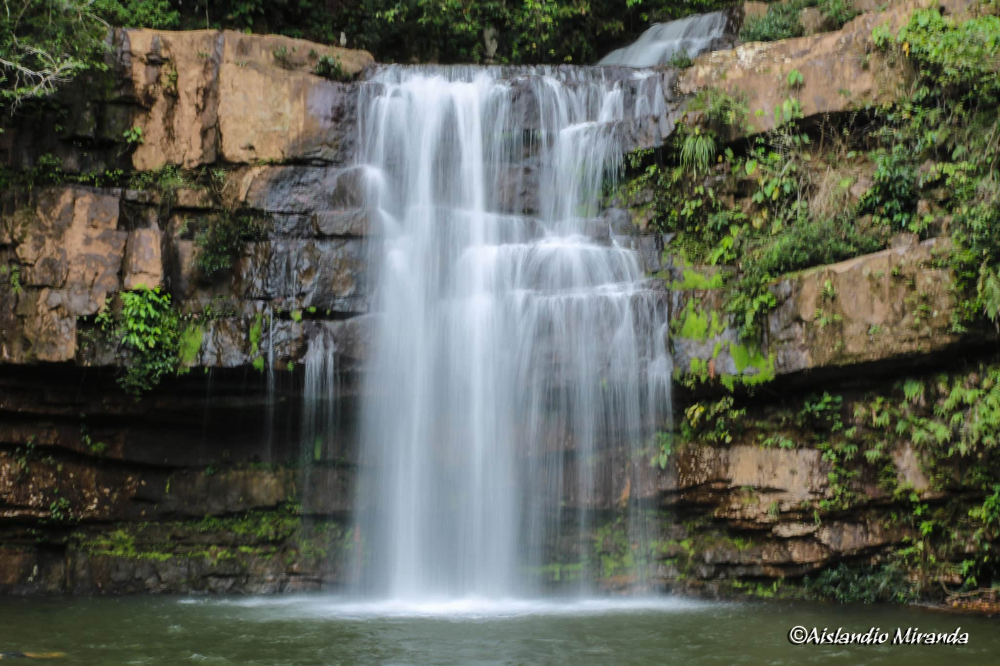

Conheça o lugar

A Cachoeira da Usina é um dos pontos turísticos naturais mais conhecidos de Barra do Garças, no estado de Mato Grosso. Localizada em uma área cercada pela vegetação típica do Cerrado brasileiro, a cachoeira atrai turistas e moradores que procuram contato com a natureza, lazer e momentos de tranquilidade. O local é bastante visitado durante finais de semana, feriados e temporadas de férias, sendo considerado uma das atrações naturais mais importantes da região do Araguaia. A cachoeira recebeu esse nome devido à antiga usina hidrelétrica existente nas proximidades do local. Com o passar dos anos, a região acabou se tornando um espaço turístico muito frequentado, principalmente por pessoas interessadas em banho, descanso e contemplação das paisagens naturais. A combinação entre águas correntes, pedras e vegetação cria um cenário bastante procurado por visitantes e fotógrafos. A Cachoeira da Usina possui pequenas quedas d’água que formam piscinas naturais muito utilizadas para banho e recreação. Durante o período de seca, as águas costumam ficar mais cristalinas e o acesso ao local se torna mais fácil para os visitantes. Já no período chuvoso, o volume de água aumenta significativamente, deixando a paisagem ainda mais impressionante e reforçando a força natural da cachoeira. Além da beleza natural, o local também é conhecido por proporcionar um ambiente agradável para famílias e grupos de amigos. Muitas pessoas visitam a cachoeira para fazer piqueniques, descansar próximo à natureza e aproveitar o clima característico da região do Araguaia. O som das águas e a presença da vegetação do Cerrado tornam o ambiente tranquilo e bastante procurado para relaxamento.
A região da Cachoeira da Usina também chama atenção pela presença de formações rochosas e pequenas trilhas utilizadas pelos visitantes para explorar a área ao redor. O contato direto com a natureza faz do local uma opção bastante procurada por pessoas que gostam de turismo ecológico, caminhadas e aventuras leves em meio ao Cerrado mato-grossense. Outro destaque da cachoeira é sua proximidade com outros pontos turísticos importantes de Barra do Garças, especialmente atrações ligadas ao Parque Estadual da Serra Azul. Isso faz com que muitos turistas incluam o local em roteiros de ecoturismo pela cidade, visitando diferentes atrações naturais durante a mesma viagem. A área ao redor da cachoeira possui vegetação preservada e abriga diversas espécies típicas do Cerrado brasileiro, incluindo aves, pequenos animais silvestres e plantas nativas da região. A preservação ambiental do local é considerada importante para manter o equilíbrio ecológico e conservar as nascentes e cursos d’água da região. Além do lazer e do turismo, a Cachoeira da Usina ajuda a fortalecer a economia local por meio do turismo regional. O aumento do número de visitantes movimenta diferentes setores ligados ao comércio, alimentação e serviços turísticos de Barra do Garças, contribuindo para o desenvolvimento da cidade.
A melhor época para visitar a Cachoeira da Usina costuma ser durante o período de seca, entre os meses de maio e setembro, quando o clima fica mais agradável e o acesso às áreas naturais se torna mais seguro. Nesse período, as trilhas e áreas próximas da cachoeira apresentam melhores condições para banho, caminhadas e atividades ao ar livre. Muitas pessoas também procuram o local para fotografar as paisagens naturais e registrar momentos em meio à natureza. O cenário formado pelas quedas d’água, pelas pedras e pela vegetação típica do Cerrado faz da cachoeira um dos locais mais bonitos e visitados da região de Barra do Garças. A Cachoeira da Usina representa uma das várias atrações naturais que ajudam a destacar Barra do Garças como um importante destino turístico do estado de Mato Grosso. A combinação entre natureza preservada, águas naturais, tranquilidade e lazer transforma o local em uma experiência bastante procurada por visitantes de diferentes regiões do Brasil. Além de toda a beleza natural e da importância turística para Barra do Garças, a Cachoeira da Usina possui localização relativamente próxima da área urbana da cidade, facilitando o acesso dos visitantes. O local oferece uma experiência de contato direto com a natureza e reforça a importância da preservação ambiental das paisagens naturais da região do Araguaia.
As condições de acesso, funcionamento, valores e regras podem mudar. Confirme as informações com responsáveis ou órgãos locais antes de realizar o passeio.